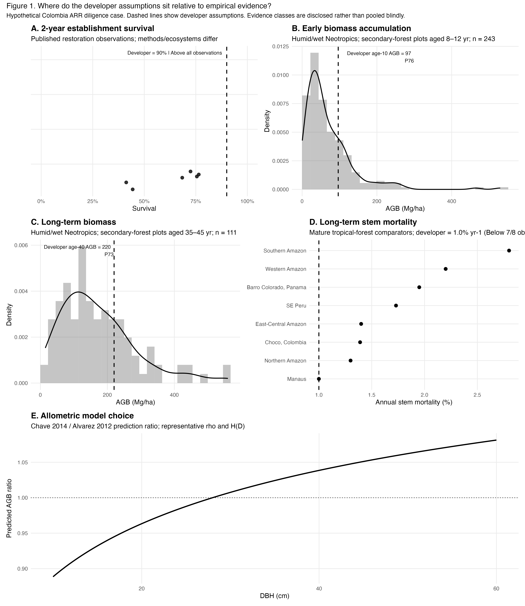
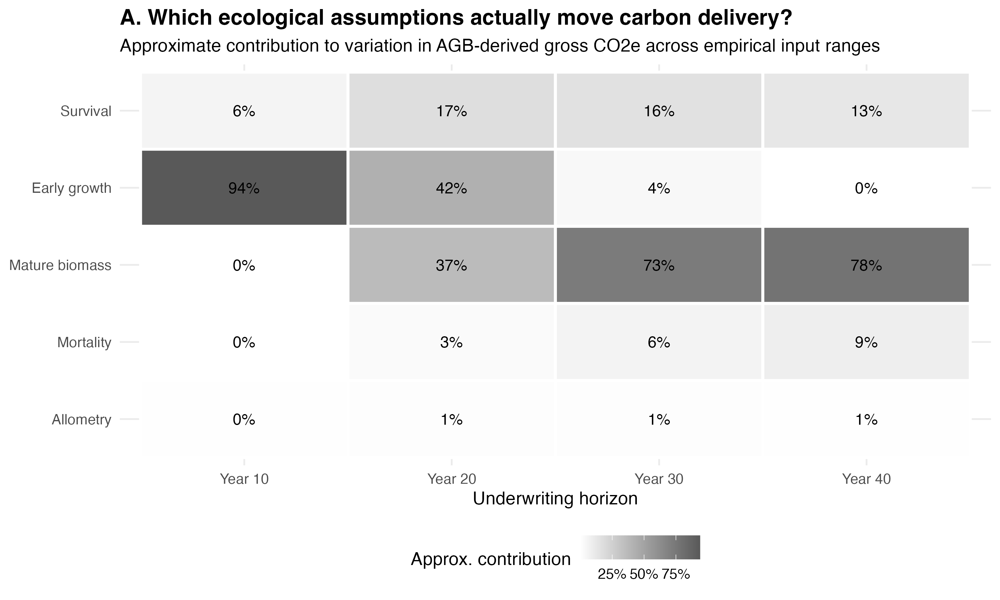
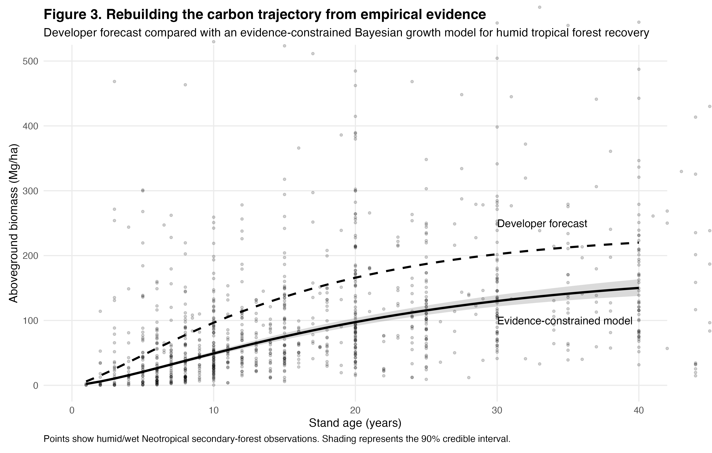

Building evidence-constrained growth and survival trajectories for tropical reforestation.
Ecological modeling for a hypothetical ARR project in humid tropical Colombia, using empirical evidence to constrain establishment, biomass accumulation, mortality, allometry, and long-term forest development.
Ground the biological assumptions in evidence.
Growth and survival inputs should reflect the ecology of the system rather than function as fixed spreadsheet assumptions.
We constructed the illustrative developer case using favorable but biologically plausible assumptions and fixed them before comparison with the empirical benchmark. The model assumed 90% establishment survival and a trajectory reaching 220 Mg AGB ha⁻¹ at year 40. The long-term biomass endpoint was chosen to represent a credible humid-tropical forest biomass target—not because the empirical dataset indicated that 220 Mg ha⁻¹ was the expected outcome.
We then benchmarked establishment survival, early biomass accumulation, mature biomass, stem mortality, and allometric model choice against published observations from Colombian and comparable Neotropical forests.
The 90% establishment-survival assumption exceeded the available restoration comparators. Early biomass at year 10 sat around the 76th percentile of the empirical benchmark, while the independently selected 220 Mg AGB ha⁻¹ year-40 target sat around the 73rd percentile. The assumed 1% annual mortality rate was lower than nearly all mature-forest comparators. By contrast, replacing the pantropical Chave allometry with a Colombia-specific regional relationship produced relatively small differences across the relevant tree-size range.

Benchmarking shows where the biological model needs stronger support.
The comparison separates assumptions that are well represented by the evidence from those that sit toward the favorable edge of observed ecological outcomes.
Identify which biological parameters control the trajectory.
The parameters that matter most change as a restored forest develops.
We propagated the empirical input ranges through the ecological model and measured their approximate contribution to forecast variation at different project ages.
The dominant uncertainty changed with time. Early growth accounted for approximately 94% of modeled variation at year 10 and 42% at year 20, but became largely irrelevant later in the project. Mature biomass contributed approximately 37% at year 20, 73% at year 30, and 78% at year 40. Survival remained material throughout, while mortality increased in importance over time. Allometry contributed roughly 1% or less.

Model development should follow ecological materiality.
Near-term trajectories depend heavily on establishment and early growth; long-term trajectories become increasingly controlled by mature biomass and mortality. That tells us where better project-specific data provide the most value.
Build the trajectory from ecological evidence.
Treat growth and survival as uncertain biological processes, not deterministic inputs.
We fit an evidence-constrained Bayesian Chapman–Richards growth model to humid and wet Neotropical secondary-forest observations. Biologically plausible priors define the parameter space, empirical observations update those priors, and posterior uncertainty is retained rather than collapsed into a single deterministic growth rate.
The resulting model provides a central ecological trajectory and a credible range of forest development that can be propagated into the broader carbon model. The illustrative developer trajectory is retained as a comparison, showing how a supplied forecast can be evaluated against an independently estimated growth process.

Growth and survival become distributions, not point assumptions.
The model preserves uncertainty in forest development and provides a defensible basis for updating the trajectory as project-specific monitoring data accumulate.
A growth curve grounded in biological evidence.
Rather than selecting a single favorable growth rate, the analysis combines empirical observations, ecological constraints, and explicit uncertainty into a probabilistic trajectory. This makes it possible to identify which biological assumptions need stronger evidence, quantify the range of plausible forest development, and update expectations as project-specific growth and survival data become available.
Biology first
Growth and survival assumptions are ecological models in their own right. Treating them explicitly makes the resulting carbon forecast more transparent, updateable, and defensible.